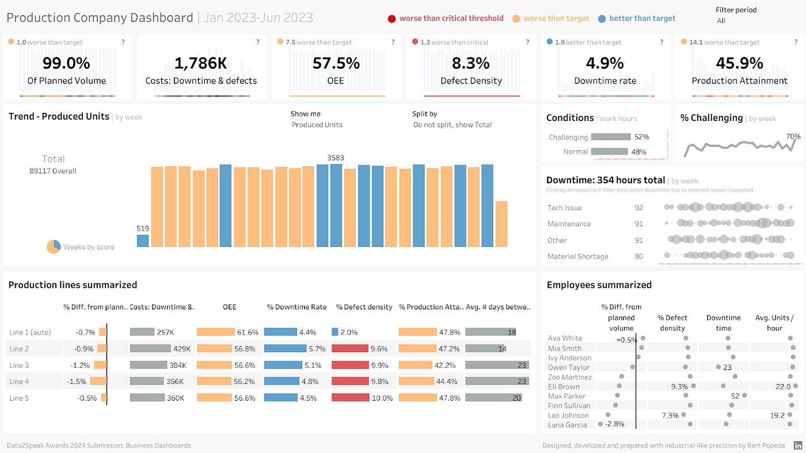

Manufacturing Analytics & Operational Insights
Built a manufacturing analytics dashboard to monitor production efficiency, downtime drivers, quality metrics, and workforce performance. The dashboard provides real-time operational visibility and helps management identify bottlenecks, improve productivity, and optimize manufacturing processes.
Manufacturing operations often rely on scattered reports and manual tracking to monitor production performance. This makes it difficult to identify downtime drivers, measure efficiency, and track workforce productivity. A centralized analytics solution was needed to support operational decision-making.
